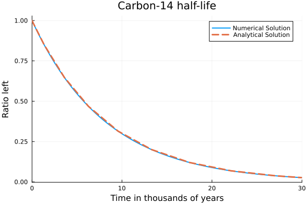
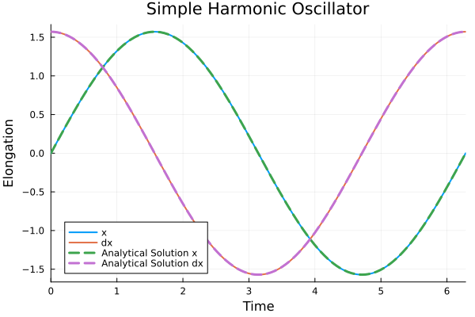
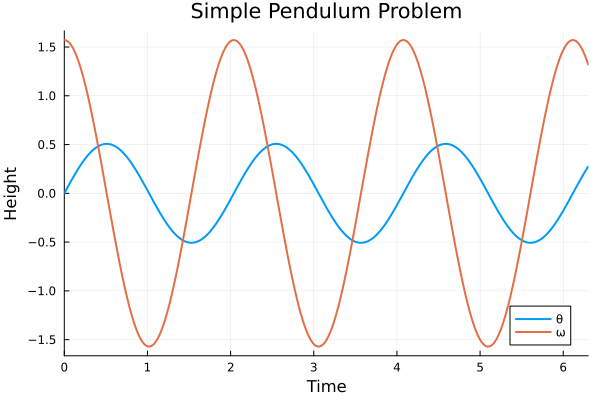
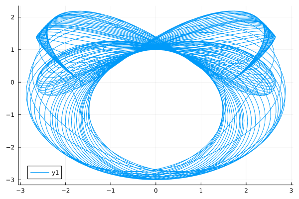
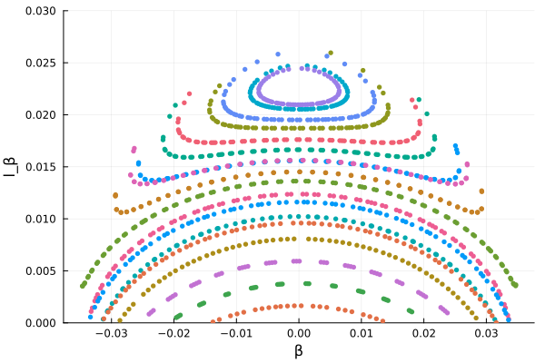
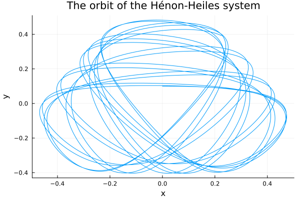
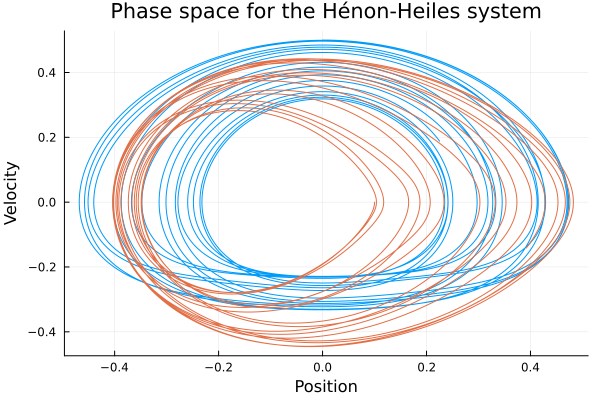
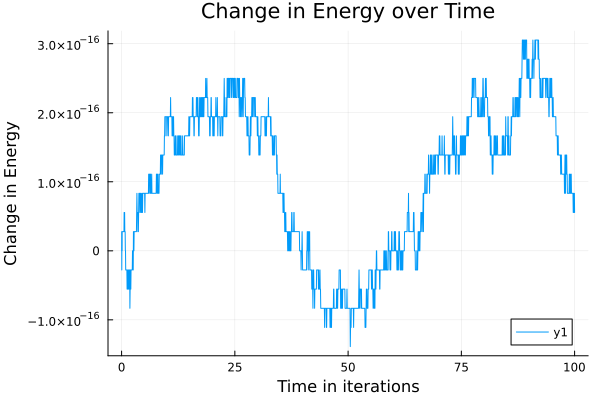
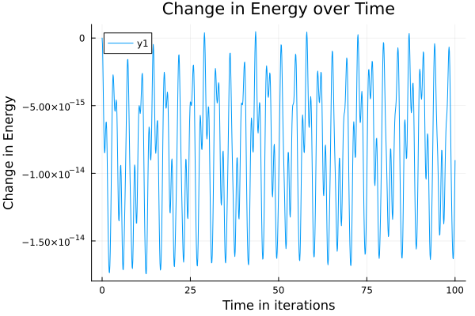
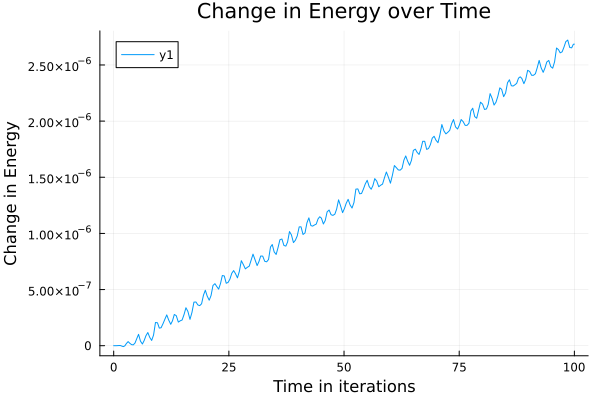

Classical Physics Models
If you're getting some cold feet to jump in to DiffEq land, here are some handcrafted differential equations mini problems to hold your hand along the beginning of your journey.
First order linear ODE
Radioactive Decay of Carbon-14
\[\frac{du}{dt} = f(t,u) = - λ u\]
The Radioactive decay problem is the first order linear ODE problem of an exponential with a negative coefficient, which represents the half-life of the process in question. Should the coefficient be positive, this would represent a population growth equation. $λ$ is known as the decay rate, and can be related to the half-life as $λ = \ln(2)/t_{1/2}$.
import OrdinaryDiffEq as ODE
import Plots: plot, plot!
#Half-life of Carbon-14 is 5,730 years.
t½ = 5.73
#Setup
u₀ = 1.0
tspan = (0.0, 30.0)
#Define the problem
radioactivedecay(u, p, t) = -log(2) / t½ * u
#Pass to solver
prob = ODE.ODEProblem(radioactivedecay, u₀, tspan)
sol = ODE.solve(prob, ODE.Tsit5())
#Plot
plot(
sol, linewidth = 2, title = "Carbon-14 half-life",
xaxis = "Time in thousands of years", yaxis = "Ratio left",
label = "Numerical Solution"
)
plot!(sol.t, t -> 2^(-t / t½), lw = 3, ls = :dash, label = "Analytical Solution")
Second Order Linear ODE
Simple Harmonic Oscillator
Another classical example is the harmonic oscillator, given by:
\[\ddot{x} + ω^2 x = 0\]
with the known analytical solution
\[\begin{align*} x(t) &= A \cos(ωt - φ) \\ v(t) &= -A ω \sin(ωt - φ), \end{align*}\]
where
\[A = \sqrt{c_1 + c_2} \qquad\text{and}\qquad \tan φ = \frac{c_2}{c_1}\]
with $c_1$, $c_2$ constants determined by the initial conditions such that $c_1$ is the initial position and $ω c_2$ is the initial velocity.
Instead of transforming this to a system of ODEs to solve with ODEProblem, we can use SecondOrderODEProblem as follows.
# Simple Harmonic Oscillator Problem
import OrdinaryDiffEq as ODE
import OrdinaryDiffEqRKN: DPRKN6
import Plots: plot, plot!
#Parameters
ω = 1
#Initial Conditions
x₀ = [0.0]
dx₀ = [π / 2]
tspan = (0.0, 2π)
ϕ = atan((dx₀[1] / ω) / x₀[1])
A = √(x₀[1]^2 + dx₀[1]^2)
#Define the problem
function harmonicoscillator(ddu, du, u, ω, t)
return ddu .= -ω^2 * u
end
#Pass to solvers
prob = ODE.SecondOrderODEProblem(harmonicoscillator, dx₀, x₀, tspan, ω)
sol = ODE.solve(prob, DPRKN6())
#Plot
plot(
sol, idxs = [2, 1], linewidth = 2, title = "Simple Harmonic Oscillator",
xaxis = "Time", yaxis = "Elongation", label = ["x" "dx"]
)
plot!(t -> A * cos(ω * t - ϕ), lw = 3, ls = :dash, label = "Analytical Solution x")
plot!(t -> -A * ω * sin(ω * t - ϕ), lw = 3, ls = :dash, label = "Analytical Solution dx")
Note that the order of the variables (and initial conditions) is dx, x. Thus, if we want the first series to be x, we have to flip the order with vars=[2,1].
Second Order Non-linear ODE
Simple Pendulum
We will start by solving the pendulum problem. In the physics class, we often solve this problem by small angle approximation, i.e. $\sin(θ) ≈ θ$, because otherwise, we get an elliptic integral which doesn't have an analytic solution. The linearized form is
\[\ddot{θ} + \frac{g}{L} θ = 0\]
But we have numerical ODE solvers! Why not solve the real pendulum?
\[\ddot{θ} + \frac{g}{L} \sin(θ) = 0\]
Notice that now we have a second order ODE. In order to use the same method as above, we need to transform it into a system of first order ODEs by employing the notation $ω(t) = \dot{θ}$.
\[\begin{align*} \dot{θ} &= ω \\ \dot{ω} &= - \frac{g}{L} \sin(θ) \end{align*}\]
# Simple Pendulum Problem
import OrdinaryDiffEq as ODE
import Plots: plot, plot!
#Constants
const g = 9.81
L = 1.0
#Initial Conditions
u₀ = [0, π / 2]
tspan = (0.0, 6.3)
#Define the problem
function simplependulum(du, u, p, t)
θ, ω = u
du[1] = ω
du[2] = -(g / L) * sin(θ)
return
end
#Pass to solvers
prob = ODE.ODEProblem(simplependulum, u₀, tspan)
sol = ODE.solve(prob, ODE.Tsit5())
#Plot
plot(
sol, linewidth = 2, title = "Simple Pendulum Problem", xaxis = "Time",
yaxis = "Height", label = ["θ" "ω"]
)
So now we know that behaviour of the position versus time. However, it will be useful to us to look at the phase space of the pendulum, i.e., and representation of all possible states of the system in question (the pendulum) by looking at its velocity and position. Phase space analysis is ubiquitous in the analysis of dynamical systems, and thus we will provide a few facilities for it.
p = plot(
sol, vars = (1, 2), xlims = (-9, 9), title = "Phase Space Plot",
xaxis = "Angular position", yaxis = "Angular velocity", leg = false
)
function phase_plot(prob, u0, p, tspan = 2pi)
_prob = ODE.ODEProblem(prob.f, u0, (0.0, tspan))
sol = ODE.solve(_prob, ODE.Vern9()) # Use Vern9 solver for higher accuracy
return plot!(p, sol, idxs = (1, 2))
end
for i in (-4pi):(pi / 2):(4π)
for j in (-4pi):(pi / 2):(4π)
phase_plot(prob, [j, i], p)
end
end
plot(p, xlims = (-9, 9))
Double Pendulum
A more complicated example is given by the double pendulum. The equations governing its motion are given by the following (taken from this Stack Overflow question)
\[\begin{align*} \frac{dα}{dt} &= 2\frac{l_α - (1+\cos β) l_β}{3 - \cos 2β} \\[4pt] \frac{dl_α}{dt} &= -2 \sin α - \sin(α + β) \\[4pt] \frac{dβ}{dt} &= 2\frac{-(1+\cos β) l_α + (3+2\cos β) l_β}{3 - \cos(2β)} \\[4pt] \frac{dl_β}{dt} &= -\sin(α+β) - 2\sin(β)\frac{(l_α - l_β)l_β}{3-\cos(2β)} + 2\sin(2β) \frac{l_α^2 - 2(1+\cos β) l_α l_β + (3+2\cosβ) l_β^2}{(3 - \cos(2β))^2} \end{align*}\]
#Double Pendulum Problem
import OrdinaryDiffEq as ODE
import Plots: plot, plot!, scatter, scatter!
#Constants and setup
const m₁, m₂, L₁, L₂ = 1, 2, 1, 2
initial = [0, π / 3, 0, 3pi / 5]
tspan = (0.0, 50.0)
#Convenience function for transforming from polar to Cartesian coordinates
function polar2cart(sol; dt = 0.02, l1 = L₁, l2 = L₂, vars = (2, 4))
u = sol.t[1]:dt:sol.t[end]
p1 = l1 * map(x -> x[vars[1]], sol.(u))
p2 = l2 * map(y -> y[vars[2]], sol.(u))
x1 = l1 * sin.(p1)
y1 = l1 * -cos.(p1)
r = (
x1 + l2 * sin.(p2),
y1 - l2 * cos.(p2),
)
return (u, r)
end
#Define the Problem
function double_pendulum(xdot, x, p, t)
θ₁, ω₁, θ₂, ω₂ = x
Δθ = θ₁ - θ₂
sΔ, cΔ = sincos(Δθ)
xdot[1] = ω₁
xdot[2] = -(
(
g * (2m₁ + m₂) * sin(θ₁) +
m₂ * g * sin(θ₁ - 2θ₂) +
2m₂ * (L₂ * ω₂^2 + L₁ * ω₁^2 * cΔ) * sΔ
) /
(2L₁ * (m₁ + m₂ * sΔ^2))
)
xdot[3] = ω₂
return xdot[4] = ((m₁ + m₂) * (L₁ * ω₁^2 + g * cos(θ₁)) + L₂ * m₂ * ω₂^2 * cΔ) * sΔ /
(L₂ * (m₁ + m₂ * sΔ^2))
end
#Pass to Solvers
double_pendulum_problem = ODE.ODEProblem(double_pendulum, initial, tspan)
sol = ODE.solve(double_pendulum_problem, ODE.Vern7(), abstol = 1.0e-10, dt = 0.05);retcode: Success
Interpolation: specialized 7th order lazy interpolation
t: 300-element Vector{Float64}:
0.0
0.05
0.12217751622058524
0.21737046905775836
0.3255787086175605
0.45380019052324155
0.6093195606053127
0.7728295835307075
0.9531773015934446
1.178936452093833
⋮
48.56938079816673
48.7563775340732
48.92747888747574
49.12151506174024
49.30166659605059
49.466445188675564
49.644275424815355
49.78679810755244
50.0
u: 300-element Vector{Vector{Float64}}:
[0.0, 1.0471975511965976, 0.0, 1.8849555921538759]
[0.05276815671595484, 1.071438957072351, 0.09384176137401032, 1.8607344940613866]
[0.13346405022464974, 1.1746261372772204, 0.2246154427121532, 1.749868292237012]
[0.2534001539025763, 1.3397062201299805, 0.3806816294480533, 1.5194590529384868]
[0.40362066930016355, 1.4025944952691776, 0.5297354554896814, 1.2404437055983009]
[0.572296838788204, 1.1714501763242335, 0.6713718220157863, 0.986190196252271]
[0.7085423339309264, 0.539903531551118, 0.807979048613969, 0.7794821222233657]
[0.7355031474073365, -0.19082056104554196, 0.9166518850457743, 0.5304216702747958]
[0.647801245302192, -0.713845531236495, 0.9733991099427947, 0.05711240395884711]
[0.4700665697655869, -0.7343043637982303, 0.8886984348250547, -0.8582765324454221]
⋮
[-0.655547535047532, -0.43413585940026367, -0.8218749873627244, 1.3383995922595542]
[-0.6545393233645029, 0.6393519978174996, -0.5551658847401773, 1.3845271567742579]
[-0.4224791976296923, 2.018551723539658, -0.3471917114203967, 1.042394079126176]
[0.016649850216383693, 2.108064216414493, -0.14266655415973245, 1.2529804077667503]
[0.282744222090289, 0.7861283125852483, 0.1478201473845584, 1.9484415252416147]
[0.34628967140829064, 0.23457916223248146, 0.48488462162445406, 1.9743859477635373]
[0.4277722810730815, 0.7106352082657409, 0.7731951730929969, 1.2198285330886462]
[0.5465172554737808, 0.8994327527768248, 0.9011967077162675, 0.5915426120526703]
[0.7136904261911889, 0.5470830780820546, 0.947165684945665, -0.10172229763976384]#Obtain coordinates in Cartesian Geometry
ts, ps = polar2cart(sol, l1 = L₁, l2 = L₂, dt = 0.01)
plot(ps...)
Poincaré section
In this case, the phase space is 4 dimensional, and it cannot be easily visualized. Instead of looking at the full phase space, we can look at Poincaré sections, which are sections through a higher-dimensional phase space diagram. This helps to understand the dynamics of interactions and is wonderfully pretty.
The Poincaré section in this is given by the collection of $(β,l_β)$ when $α=0$ and $\frac{dα}{dt}>0$.
#Constants and setup
initial2 = [0.01, 0.005, 0.01, 0.01]
tspan2 = (0.0, 500.0)
#Define the problem
function double_pendulum_hamiltonian(udot, u, p, t)
α, lα, β, lβ = u
return udot .= [
2(lα - (1 + cos(β))lβ) / (3 - cos(2β)),
-2sin(α) - sin(α + β),
2(-(1 + cos(β))lα + (3 + 2cos(β))lβ) / (3 - cos(2β)),
-sin(α + β) - 2sin(β) * (((lα - lβ)lβ) / (3 - cos(2β))) +
2sin(2β) * ((lα^2 - 2(1 + cos(β))lα * lβ + (3 + 2cos(β))lβ^2) / (3 - cos(2β))^2),
]
end
# Construct a ContinuousCallback
condition(u, t, integrator) = u[1]
affect!(integrator) = nothing
cb = ODE.ContinuousCallback(
condition, affect!, nothing,
save_positions = (true, false)
)
# Construct Problem
poincare = ODE.ODEProblem(double_pendulum_hamiltonian, initial2, tspan2)
sol2 = ODE.solve(
poincare, ODE.Vern9(), save_everystep = false, save_start = false,
save_end = false, callback = cb, abstol = 1.0e-16, reltol = 1.0e-16
)
function poincare_map(prob, u₀, p; callback = cb)
_prob = ODE.ODEProblem(prob.f, u₀, prob.tspan)
sol = ODE.solve(
_prob, ODE.Vern9(), save_everystep = false, save_start = false,
save_end = false, callback = cb, abstol = 1.0e-16, reltol = 1.0e-16
)
return scatter!(p, sol, idxs = (3, 4), markersize = 3, msw = 0)
endpoincare_map (generic function with 1 method)lβrange = -0.02:0.0025:0.02
p = scatter(sol2, idxs = (3, 4), leg = false, markersize = 3, msw = 0)
for lβ in lβrange
poincare_map(poincare, [0.01, 0.01, 0.01, lβ], p)
end
plot(p, xlabel = "β", ylabel = "l_β", ylims = (0, 0.03))
Hénon-Heiles System
The Hénon-Heiles potential occurs when non-linear motion of a star around a galactic center, with the motion restricted to a plane.
\[\begin{align*} \frac{d^2x}{dt^2} &= -\frac{∂V}{∂x} \\ \frac{d^2y}{dt^2} &= -\frac{∂V}{∂y} \end{align*}\]
where
\[V(x,y) = \frac {1}{2} (x^2+y^2) + λ \left(x^2 y - \frac{y^3}{3}\right).\]
We pick $λ=1$ in this case, so
\[V(x,y) = \frac{1}{2} \left(x^2 + y^2 + 2 x^2 y - \frac{2}{3} y^3\right).\]
Then the total energy of the system can be expressed by
\[E = T+V = V(x,y) + \frac{1}{2} \left(\dot{x}^2+\dot{y}^2\right).\]
The total energy should conserve as this system evolves.
import OrdinaryDiffEq as ODE
import Plots: plot, plot!
#Setup
initial = [0.0, 0.1, 0.5, 0]
tspan = (0, 100.0)
#Remember, V is the potential of the system and T is the Total Kinetic Energy, thus E will
#the total energy of the system.
V(x, y) = 1 // 2 * (x^2 + y^2 + 2x^2 * y - 2 // 3 * y^3)
E(x, y, dx, dy) = V(x, y) + 1 // 2 * (dx^2 + dy^2);
#Define the function
function Hénon_Heiles(du, u, p, t)
x, y, dx, dy = u
du[1] = dx
du[2] = dy
du[3] = -x - 2x * y
du[4] = y^2 - y - x^2
return
end
#Pass to solvers
prob = ODE.ODEProblem(Hénon_Heiles, initial, tspan)
sol = ODE.solve(prob, ODE.Vern9(), abstol = 1.0e-16, reltol = 1.0e-16);retcode: Success
Interpolation: specialized 9th order lazy interpolation
t: 1863-element Vector{Float64}:
0.0
0.011644644151844885
0.02264023714416834
0.03374457594382288
0.04563990188830179
0.057391231232336234
0.07174977162121454
0.08480028160905223
0.09910383144678445
0.1142108476442315
⋮
99.58847440664125
99.64160267750303
99.6968708774998
99.74932424004062
99.80011243132432
99.85095210142973
99.90327646545602
99.95422211231234
100.0
u: 1863-element Vector{Vector{Float64}}:
[0.0, 0.1, 0.5, 0.0]
[0.005822164178948816, 0.09999389777392866, 0.49995932143722593, -0.0010481306031208865]
[0.011318958127118273, 0.09997692919980947, 0.49984623673656015, -0.0020384490237147167]
[0.016868445850148756, 0.09994873554424334, 0.49965844456401465, -0.0030397517884512095]
[0.022810445783355466, 0.09990618762912931, 0.4993752787843474, -0.004114368078755132]
[0.0286767174963568, 0.0998515877639947, 0.4990123214803191, -0.005178680658354513]
[0.03583796450222989, 0.0997678665681316, 0.49845668427301676, -0.006483783637436124]
[0.04233919635463933, 0.09967548029854842, 0.49784480671277836, -0.007675422955692826]
[0.04945465907398346, 0.09955631278509883, 0.4970575081096527, -0.008988555416123775]
[0.056956606162333695, 0.09940998897188436, 0.4960937829120101, -0.010384795981227244]
⋮
[0.11791992679590642, 0.4264960832776878, 0.32028034208608286, -0.02843090971615295]
[0.13461299720530995, 0.4246189531798049, 0.3078565173005241, -0.04226803399183703]
[0.1512320178381057, 0.42187987572098684, 0.2932633890911505, -0.05689134414245793]
[0.1662187023206767, 0.4185268164625835, 0.27793369694971487, -0.07099474882804105]
[0.1799302056282835, 0.4145698571233798, 0.2618135978755507, -0.08486187364784464]
[0.1928057958697428, 0.4098982845160682, 0.24451954861268996, -0.09894852754303671]
[0.2051103697346911, 0.4043370648598709, 0.22562415338002875, -0.11365229836431057]
[0.21611579550158388, 0.3981783013583544, 0.20627519786181556, -0.12815456401786976]
[0.2251469891854333, 0.3920106535852856, 0.1881879739924378, -0.14132567096172644]# Plot the orbit
plot(
sol, idxs = (1, 2), title = "The orbit of the Hénon-Heiles system",
xaxis = "x", yaxis = "y", leg = false
)
#Optional Sanity check - what do you think this returns and why?
@show sol.retcode
#Plot -
plot(
sol, idxs = (1, 3), title = "Phase space for the Hénon-Heiles system",
xaxis = "Position", yaxis = "Velocity"
)
plot!(sol, idxs = (2, 4), leg = false)
#We map the Total energies during the time intervals of the solution (sol.u here) to a new vector
#pass it to the plotter a bit more conveniently
energy = map(x -> E(x...), sol.u)
#We use @show here to easily spot erratic behavior in our system by seeing if the loss in energy was too great.
@show ΔE = energy[1] - energy[end]
#Plot
plot(
sol.t, energy .- energy[1], title = "Change in Energy over Time",
xaxis = "Time in iterations", yaxis = "Change in Energy"
)
Symplectic Integration
To prevent energy drift, we can instead use a symplectic integrator. We can directly define and solve the SecondOrderODEProblem:
import OrdinaryDiffEqSymplecticRK as ODESymp # KahanLi8
function HH_acceleration!(dv, v, u, p, t)
x, y = u
dx, dy = dv
dv[1] = -x - 2x * y
dv[2] = y^2 - y - x^2
return
end
initial_positions = [0.0, 0.1]
initial_velocities = [0.5, 0.0]
prob = ODE.SecondOrderODEProblem(HH_acceleration!, initial_velocities, initial_positions, tspan)
sol2 = ODE.solve(prob, ODESymp.KahanLi8(), dt = 1 / 10);retcode: Success
Interpolation: 3rd order Hermite
t: 1001-element Vector{Float64}:
0.0
0.1
0.2
0.30000000000000004
0.4
0.5
0.6
0.7
0.7999999999999999
0.8999999999999999
⋮
99.19999999999864
99.29999999999863
99.39999999999863
99.49999999999862
99.59999999999862
99.69999999999861
99.7999999999986
99.8999999999986
100.0
u: 1001-element Vector{RecursiveArrayTools.ArrayPartition{Float64, Tuple{Vector{Float64}, Vector{Float64}}}}:
([0.5, 0.0], [0.0, 0.1])
([0.497004124813899, -0.009071101031878595], [0.049900082497367014, 0.09954822053953173])
([0.488065986503409, -0.01856325999777532], [0.09920263962777168, 0.0981717138550656])
([0.4733339415930383, -0.028870094978230895], [0.1473200401467506, 0.09580835287880228])
([0.45305474121099776, -0.040331734000937175], [0.1936844146808317, 0.09235911550101675])
([0.4275722362076315, -0.0532114683862374], [0.2377574398051348, 0.08769462857458447])
([0.39732459499168415, -0.06767627591286327], [0.279039924450448, 0.08166386202131776])
([0.36283926518715554, -0.08378216859669584], [0.3170810117622551, 0.07410453631898412])
([0.3247249463611115, -0.10146505675930295], [0.35148673325356056, 0.06485472395637552])
([0.2836600192614762, -0.12053752272622162], [0.3819275865822665, 0.05376507097805092])
⋮
([0.35754893663581877, 0.06817150704505637], [-0.01689940464435974, 0.41858730953689555])
([0.3573608346071073, 0.043775799566172786], [0.018901094264629065, 0.42418546702794857])
([0.35056546788922516, 0.01917894635581023], [0.054352325047751296, 0.4273357603171658])
([0.3372619546371046, -0.00582469608876845], [0.08879705585509527, 0.4280076678341491])
([0.317723101892544, -0.031415069954177], [0.12159668542307678, 0.42615121224761354])
([0.2923883191107272, -0.057726485993246215], [0.15214830714764738, 0.42170054930538214])
([0.2618505981512214, -0.0848309469334548], [0.17990076750513168, 0.4145793965132324])
([0.22683770400643935, -0.11272570532234003], [0.2043691308538718, 0.40470792450133325])
([0.1881879739856503, -0.1413256709667938], [0.22514698919068493, 0.39201065357989734])Notice that we get the same results:
# Plot the orbit
plot(
sol2, idxs = (3, 4), title = "The orbit of the Hénon-Heiles system",
xaxis = "x", yaxis = "y", leg = false
)plot(
sol2, idxs = (3, 1), title = "Phase space for the Hénon-Heiles system",
xaxis = "Position", yaxis = "Velocity"
)
plot!(sol2, idxs = (4, 2), leg = false)but now the energy change is essentially zero:
energy = map(x -> E(x[3], x[4], x[1], x[2]), sol2.u)
#We use @show here to easily spot erratic behaviour in our system by seeing if the loss in energy was too great.
@show ΔE = energy[1] - energy[end]
#Plot
plot(
sol2.t, energy .- energy[1], title = "Change in Energy over Time",
xaxis = "Time in iterations", yaxis = "Change in Energy"
)
And let's try to use a Runge-Kutta-Nyström solver to solve this. Note that Runge-Kutta-Nyström isn't symplectic.
sol3 = ODE.solve(prob, DPRKN6());
energy = map(x -> E(x[3], x[4], x[1], x[2]), sol3.u)
@show ΔE = energy[1] - energy[end]
plot(
sol3.t, energy .- energy[1], title = "Change in Energy over Time",
xaxis = "Time in iterations", yaxis = "Change in Energy"
)
Note that we are using the DPRKN6 solver at reltol=1e-3 (the default), yet it has a smaller energy variation than Vern9 at abstol=1e-16, reltol=1e-16. Therefore, using specialized solvers to solve its particular problem is very efficient.